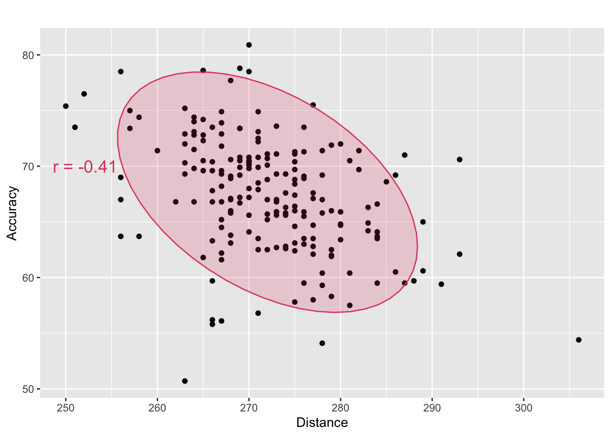
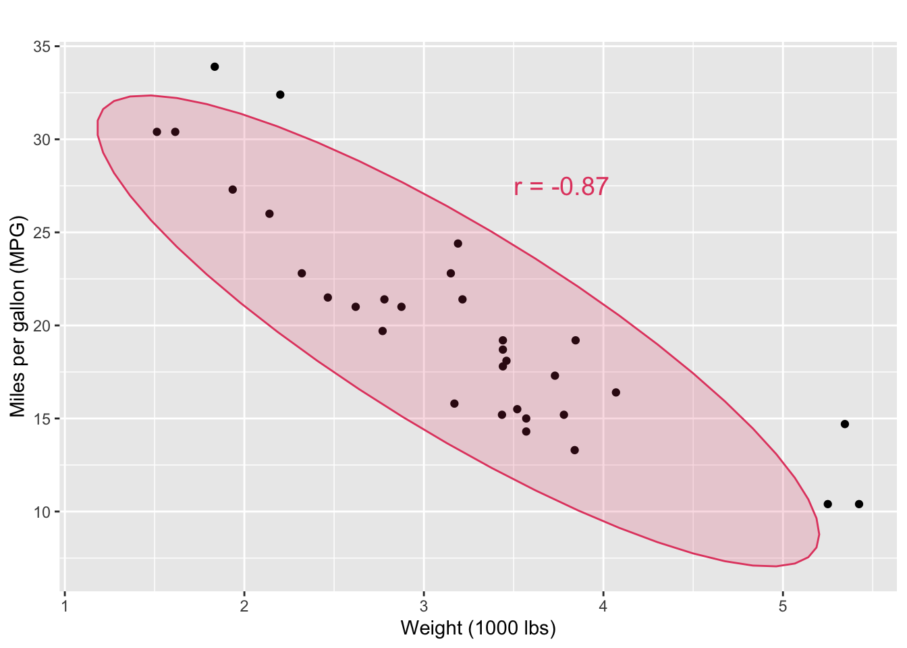

A B C D E F
-0.02770462 0.96643642 -0.69813746 0.04969697 -0.96735724 0.11948059
G H
-0.39421900 0.67692544 Correlation (and Causation)
When we see a pattern, we don’t just say “how extraordinary!” and move on; instead, we try and attribute a cause!
We all draw conclusions on the basis of what we see
But it is important for us to remember that just because there is a correlation between two facts, there isn’t necessarily a cause/effect relationship between them.
listening to loud music and acne
ice cream consumption and shark attacks
hand size and reading ability in children
…
These variables are correlated, but one does not cause the other!
https://www.tylervigen.com/spurious-correlations
Correlation
Correlation (r) quantifies the linear association between two quantitative variables.
- The value of \(r\) is between -1 and 1.
- \(r >\) 0 when \(x\) and \(y\) have a positive association.
- \(r <\) 0 when \(x\) and \(y\) have a negative association.
- \(r\) = 1 means a perfect positive linear association.
- \(r\) = -1 means a perfect negative linear association.
- \(r\) = 0 indicates no linear association between \(x\) and \(y\).
- The value of \(r\) is a measure of the extent to which \(x\) and \(y\) are linearly related.
What are the correlation values here?
Task: Match the plot panel number to the letter with the correct correlation value.
Calculating the correlation coefficient
We denote \[\begin{eqnarray*} S_{xx} &=& \sum_{i=1}^{n}(x_i - \bar{x})^2 = \sum_{i=1}^{n}x_i^2 - n\bar{x}^2 \\ S_{yy} &=& \sum_{i=1}^{n}(y_i - \bar{y})^2 = \sum_{i=1}^{n}y_i^2 - n\bar{y}^2 \\ S_{xy} &=& \sum_{i=1}^{n}(x_i - \bar{x})(y_i - \bar{y}) = \sum_{i=1}^{n}x_iy_i - n\bar{x}\bar{y} \end{eqnarray*}\]
Then \[\begin{eqnarray*} r &=& \frac{Sxy}{\sqrt{SxxSyy}} \end{eqnarray*}\]
Example: Calculate the correlation between \(x\) and \(y\)
| x | 2 | 4 | 1 | 6 | 7 |
| y | 3 | 4 | 0 | 8 | 8 |
Example: Change of scale and the correlation coefficient
The distance of the race and the time it took to complete was recorded for five races in kilometres and seconds respectively. The correlation was calculated between the two variables. The data set was also converted into miles (\(\times\) 0.621371192) and minutes (/60) and the correlation was re-calculated.
| Kilometres | Seconds | Miles | Minutes |
|---|---|---|---|
| 0.1 | 10 | 0.0621371 | 0.1666667 |
| 0.4 | 120 | 0.2485485 | 2.0000000 |
| 0.8 | 300 | 0.4970970 | 5.0000000 |
| 1.6 | 535 | 0.9941939 | 8.9166667 |
| 3.0 | 950 | 1.8641136 | 15.8333333 |
Notes
If \(x\) and \(y\) measurement units are changed, correlation does not change.
If \(x\) and \(y\) are reversed, i.e. correlation of \(y\) and \(x\), the correlation does not change.
Correlation is a measure of linear association. It does not establish causation.
Two variables, x and y, could be highly correlated because there is another variable, z, having an impact on both x and y.
Spurious Correlations
A spurious correlation is a statistical relationship between two variables that appears to be meaningful but is actually caused by coincidence or the influence of a third (confounding) variable. This misleading association can arise due to random chance, indirect causation, or omitted variables.
For example, there may be a strong correlation between ice cream sales and drowning incidents, but this does not mean one causes the other. Instead, a third factor—hot weather—increases both ice cream sales and swimming activity, which in turn raises the risk of drowning.
Spurious correlations can often be identified through deeper statistical analysis, such as controlling for confounding variables or using causal inference techniques.
Find two correlated variables from: https://www.tylervigen.com/spurious-correlations.
Create a scatter plot and find the correlation.
Example Data (1): What is the association between PGA golfer’s accuracy and driving distance?
The data set `golf’ was taken from PGA Tour Recordsof 195 golf rounds by PGA players in an attempt to explain what golf attributes contribute the most to low scores.

Example Data (2): What is the relationship between cars’ weights and their mileage?
The data was extracted from the 1974 Motor Trend US magazine, and comprises fuel consumption and 10 aspects of automobile design and performance for 32 automobiles (1973–74 models).
